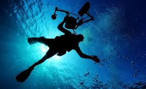

Welcome to My First GitHub Repository!
This is a simple test page.
Diving into Adventure
In recent years, diving has emerged as a popular recreational activity, allowing individuals to explore the breathtaking underwater world. From vibrant coral reefs teeming with life to the mysteries of sunken shipwrecks, the ocean offers a plethora of experiences for adventurous souls. As divers descend beneath the waves, they witness the beauty of marine ecosystems, while also understanding the importance of conservation. With proper training and equipment, diving not only provides thrill and excitement but also fosters a deep appreciation for our planet’s oceans.
- Fun Fact: A day on Venus is 243 Earth days!
- I'm learning about physics and space.
- Stay tuned for more updates!